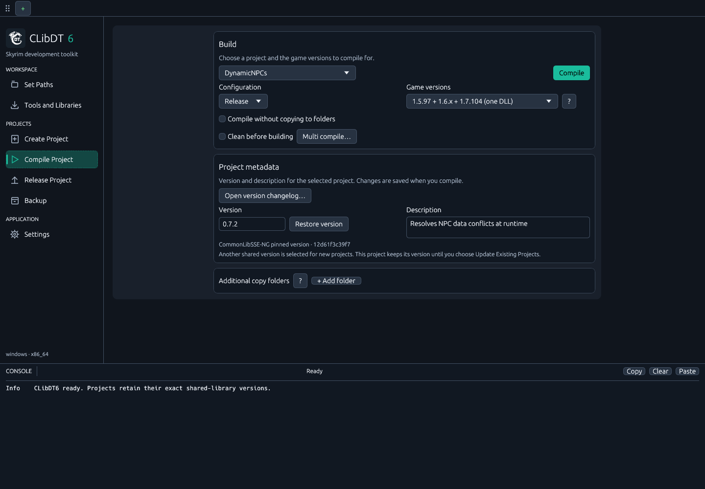
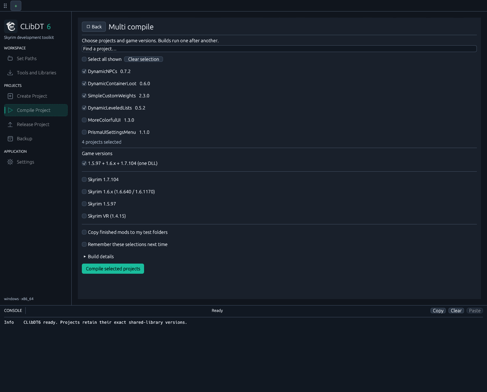
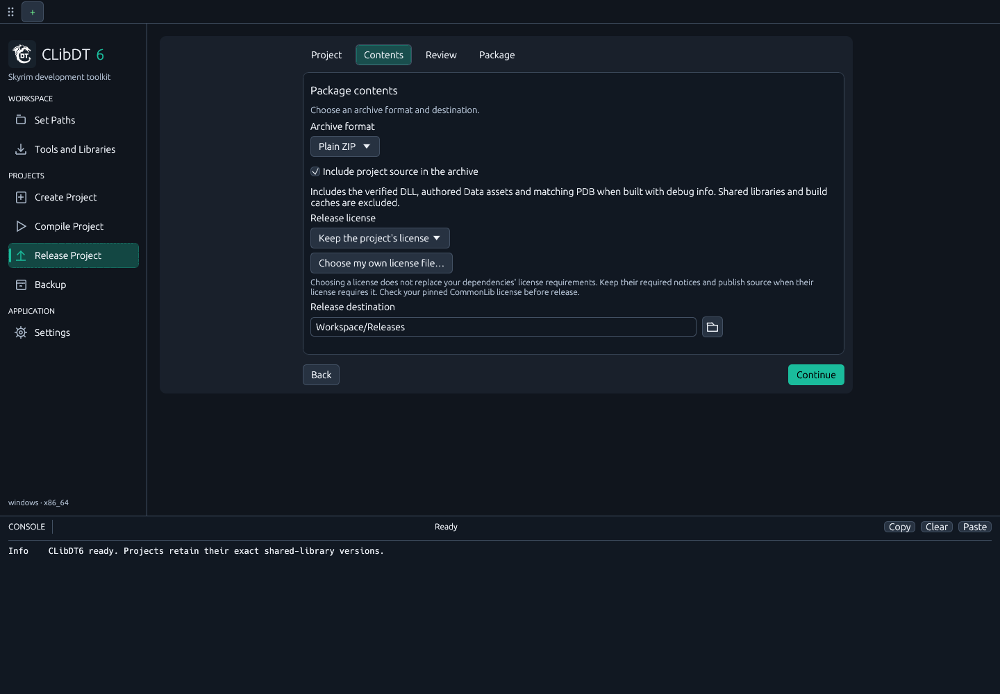

Tools in one place
Set up the build tools and shared libraries explicitly. Manage SKSE downloads separately from the Skyrim installation you test with.
Tools and librariesClibDT6 / Skyrim development toolkit
Give your Skyrim plugins a place to grow. Create a project, choose the game versions to build for, and bring your tools, libraries and release packages into one workspace.
View the interface at full size ↗01 / Build with intention
Select a project, check its version and description, then choose the build you need. Compile Project keeps the target, configuration and project details together.
Use the combined desktop choice when your code and libraries support it, or choose an individual profile. VR has its own build. Keep verified artifacts only, or explicitly copy a complete mod into your test folders.
Explore compiling and test copies
02 / A workbench for your projects
Multi compile brings your projects into one searchable list, with each project’s version intact.
Choose the projects and game versions for a batch. Builds run one after another. When you want test copies, choose one game version and enable the copy option so different runtime builds do not replace each other.
See how Multi compile works
03 / Ready to share
Move through Project, Contents, Review and Package. Choose a plain ZIP, a saved FOMOD recipe, or a source archive, then review what belongs in the release.
Binary packages use checked build artifacts, authored Data assets and matching debug symbols when available. Changed source, libraries or DLLs require a fresh build. Publishing has its own review.
Walk through a release
04 / Keep your foundation steady
Installing a newer CommonLib version gives new projects a new starting point. Existing projects keep their exact library selections until you review an update.
Set up the build tools and shared libraries explicitly. Manage SKSE downloads separately from the Skyrim installation you test with.
Tools and librariesReview a workspace connection or import a legacy project as a separate copy. Preserve recorded libraries and private snapshots where supported.
Paths and project importsBack up selected development folders or take a project snapshot. Keep the shared library store too when you need offline recovery.
Backup and restore05 / Your first build
Extract the complete toolkit package. Open ClibDT, choose your development folder in Set Paths, and review the project, library and output locations.
Install the required development tools and a suitable CommonLib version. Create a project or review an existing import. A Nexus key is optional for local development.
Select your project and runtime in Compile Project. Review the output, test the plugin in Skyrim, then prepare its release package.
06 / Know your target
A successful compile confirms a build, not how the plugin behaves in Skyrim. Runtime support depends on your code, exact library version, address data and other dependencies. Test every game version you intend to support.
Saved FOMOD recipes can be packaged; the unfinished FOMOD editor is disabled. Custom project layouts and Linux build adapters need individual review. The technical overview explains the checks and their limits.
Read the technical overview07 / Go deeper
Start with your project. Keep the tools and release steps close at hand.
Created by Supertron. ClibDT6’s original code is GPL-3.0-only. Its native interface uses egui/eframe and the Rust ecosystem; it works with Git, Xmake, Microsoft C++ tools and CommonLibSSE-NG. Those projects and bundled dependencies retain their own licenses. The toolkit’s Third Party Notices, ThirdPartyLicenses and Tool Icon Credits preserve the full attributions.